Nero X'Fire
VTuberとして配信および音楽活動を行っている Nero X'Fire さんのデザイン制作です。 ゴシック×ファンタジーを感じさせるビジュアルに合わせ、同一の様式を持った造形のロゴや配信画面へと展開しています。配信画面ではフレーム状の装飾を施すことで、名刺やグッズなどのグラフィックにも展開しやすい設計としています。
また、bilibiliでの活動も行っていることから、欧文ロゴと同じ質感を持たせた中国語ロゴの制作も行っています。
This is the design work for Nero X'Fire, who streams and performs music as a VTuber. The visual style evokes gothic fantasy, and we've expanded this consistent aesthetic into a sculptural logo and stream screen design. The stream screen incorporates frame-like decorations, enabling easy adaptation for business cards, merchandise, and other graphics.
Additionally, since Nero X'Fire also streams on bilibili, we created a Chinese logo matching the texture of the English logo.
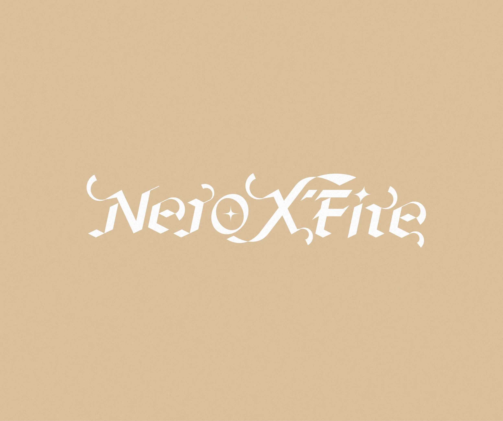
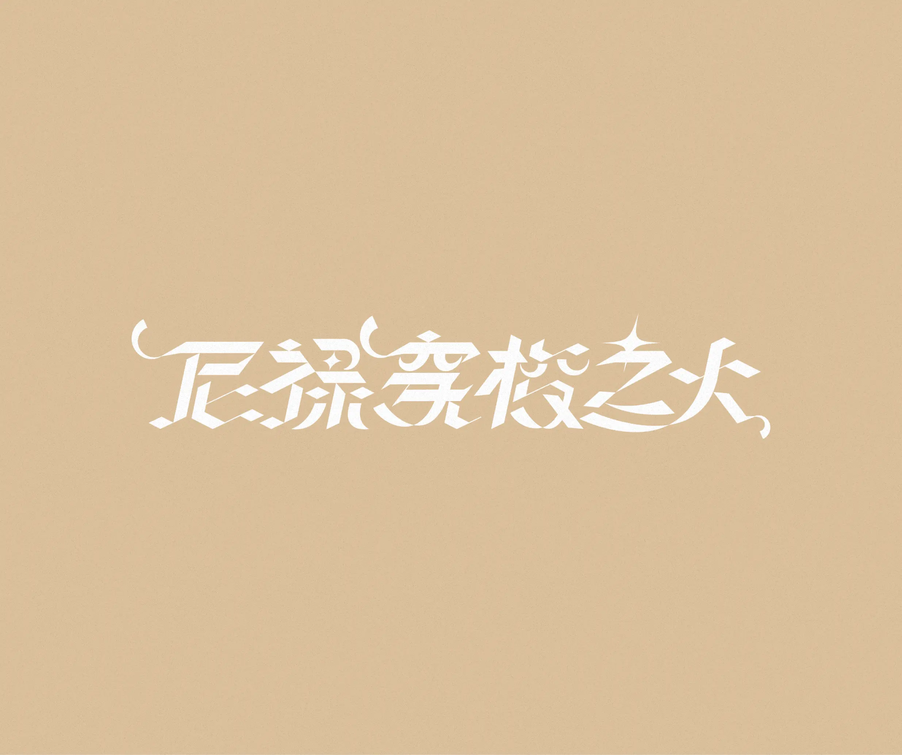
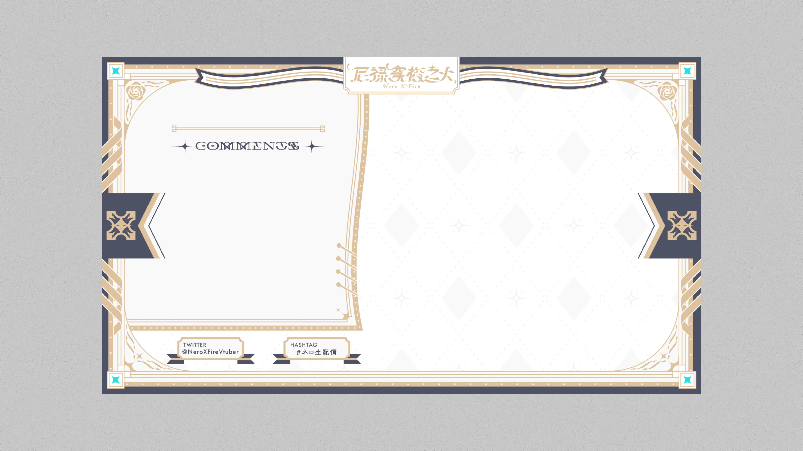
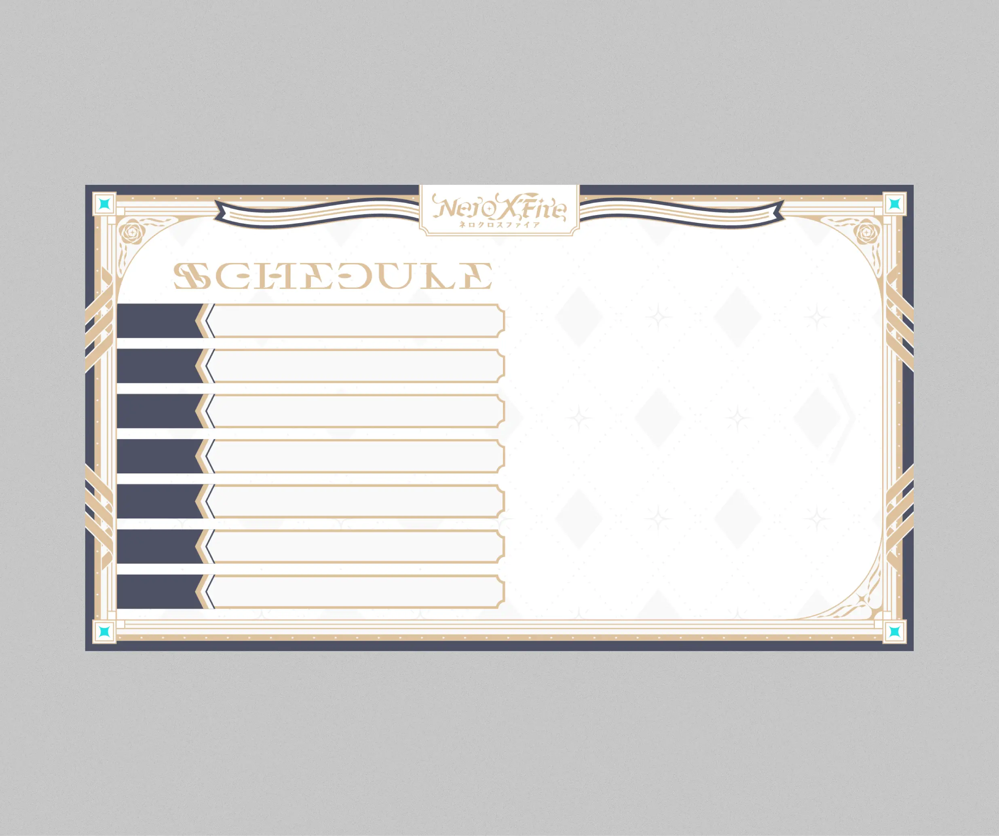
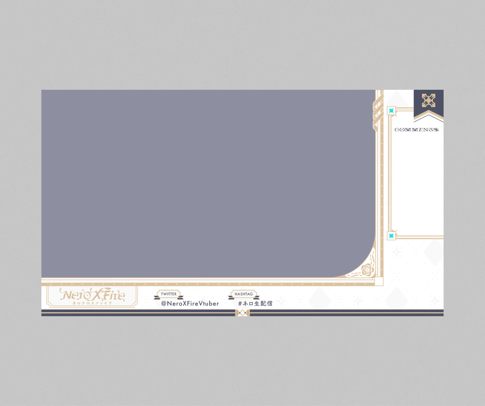
1st Mini Album「Othello」のロゴおよびジャケットデザインです。 The logo and jacket design for the 1st Mini Album “Othello”. True to the title “Othello,” this album explores Nero's duality.
The logo employs an ambigram design that remains unchanged when flipped point-symmetrically, while the jacket features a strong black-and-white color scheme for striking contrast.
The logo employs an ambigram design that remains unchanged when flipped point-symmetrically, while the jacket features a strong black-and-white color scheme for striking contrast.
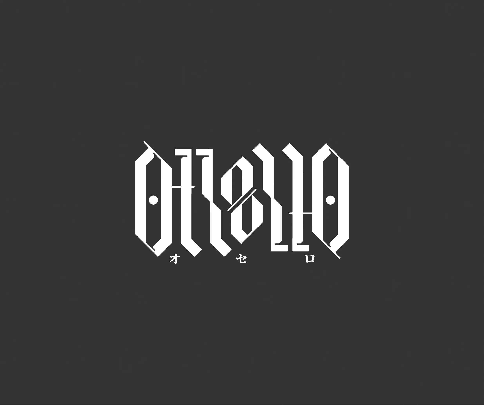
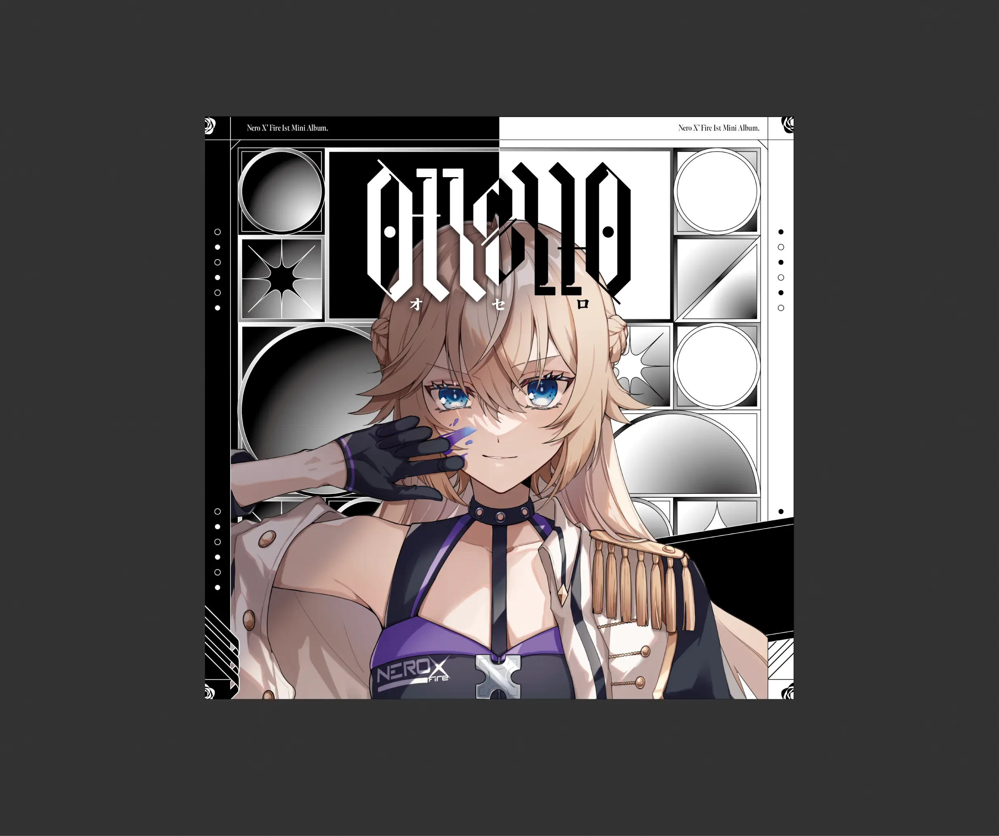
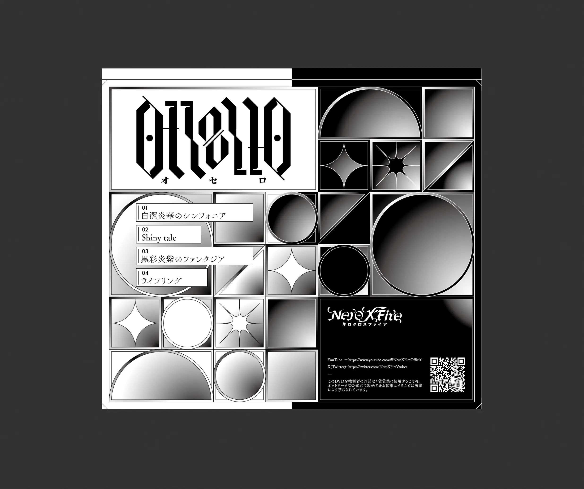
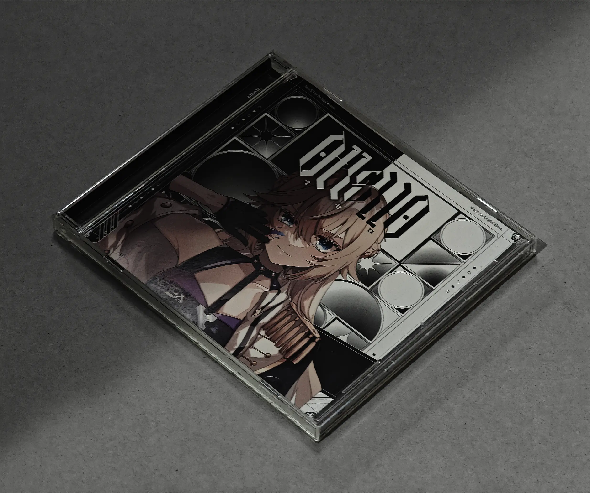
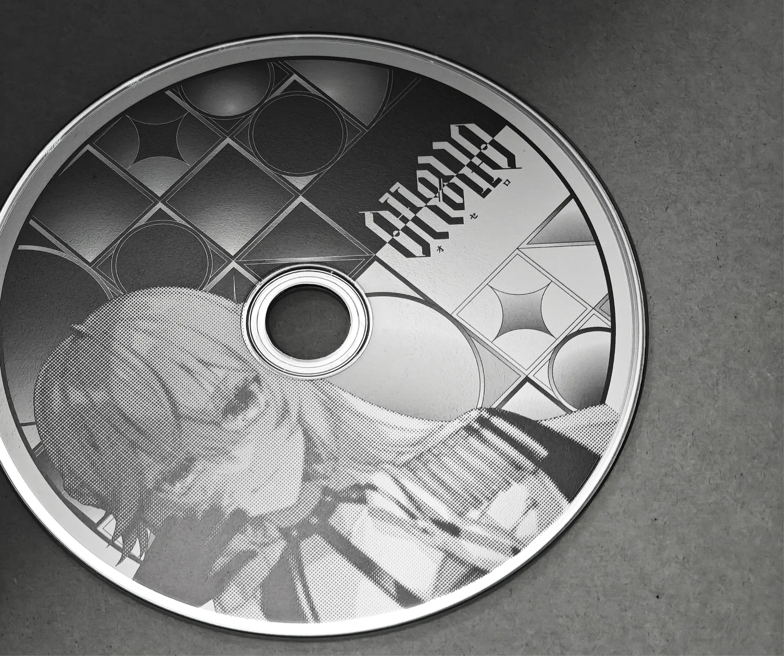
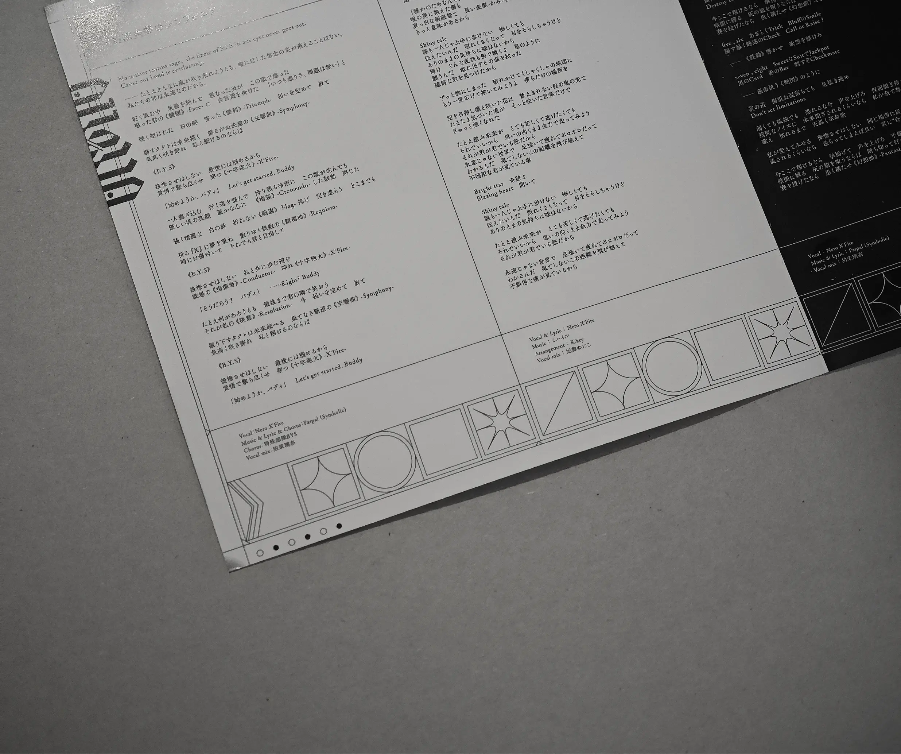
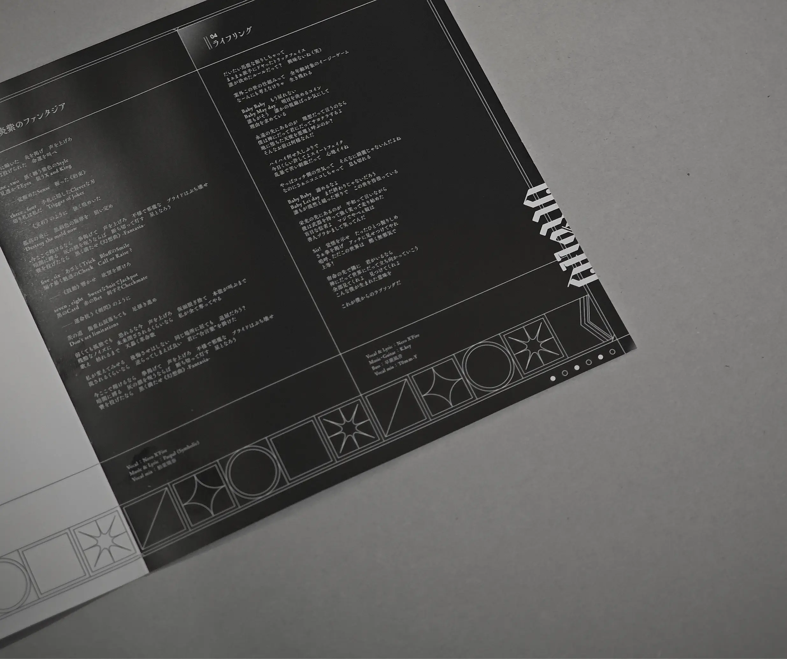